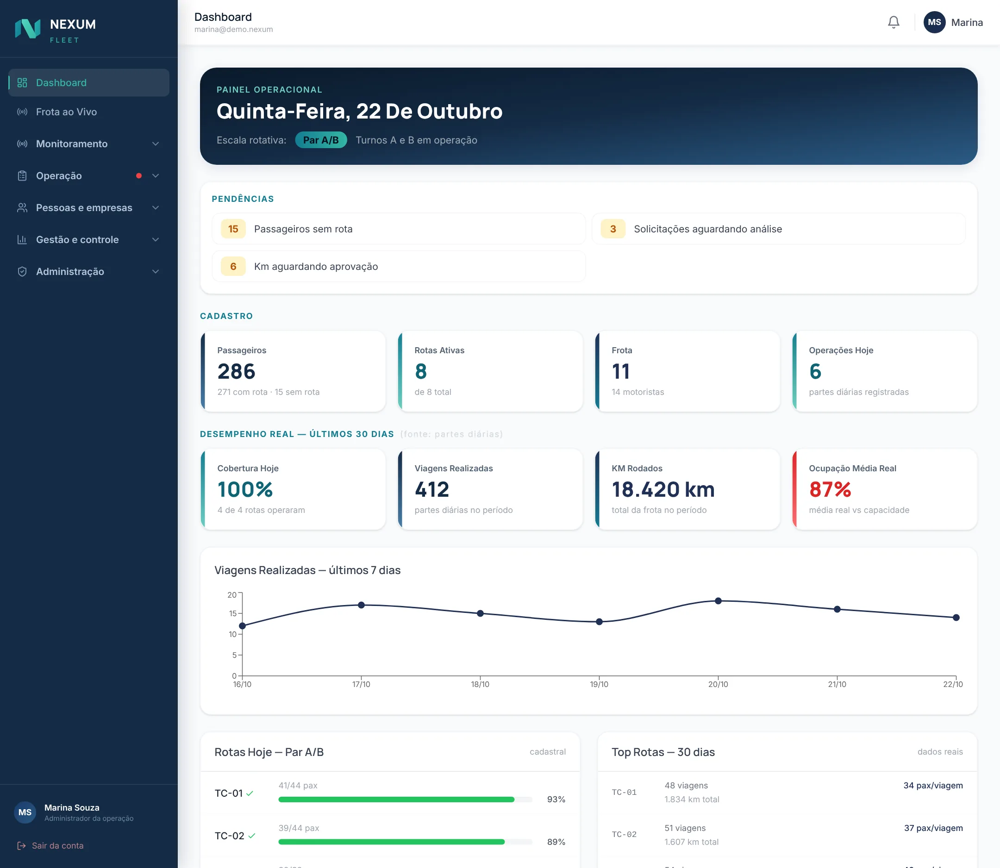

Cada rota, cada passageiro e cada veículo sob controle.
O NEXUM Fleet leva o transporte coletivo do cadastro da rota à medição do contrato, com rastreamento, computador de bordo e portal do passageiro. O NEXUM Inspect cuida da oficina: checklist com prova em foto, ordens de serviço e fatura. Tudo registrado, até sem sinal.
O transporte coletivo costuma rodar em planilha, rádio e boa vontade
Até o dia em que um ônibus sai lotado, outro vazio, e ninguém consegue provar quem fez o quê na hora de medir o contrato.
Como é hoje, na maioria das operações
Rotas em planilha que ninguém atualiza e passageiro sem lugar certo
Rota lotada de um lado e ônibus rodando vazio do outro
Viagem esquecida aberta, checklist no papel, falha de veículo que só aparece tarde
Fim do mês com discussão de quilometragem entre transportadora e contratante
Oficina sem prova: o que foi trocado, quando e por quem
Com a NEXUM
Cada passageiro vinculado a uma rota e turma, com cota e overbooking sob controle
Otimização por base que propõe e o gestor aprova: nada muda sozinho
Checklist diário no aparelho, alerta na hora e encerramento automático de viagem esquecida
Grade de km por rota e dia aprovada em fluxo, com histórico e trilha de auditoria
Foto com carimbo, orçamento aprovado item a item e tempo registrado em cada etapa
NEXUM Fleet
Do cadastro da rota à medição do contrato
Três módulos que se complementam. Contrate o conjunto ou só o que a sua operação precisa: o sistema esconde o resto.
Gestão de passageiros
Roteirização, vínculo e acompanhamento de quem usa o transporte.
Rotas no mapa, importação de KMZ e pontos de embarque
Otimização por base, em rascunho, com aprovação
Cadastro público por link, com análise do gestor
Portal do passageiro com selo digital
Frota e operação
Computador de bordo, viagens, medição e contratante no mesmo registro.
App Android do motorista, com modo offline
Checklist diário com itens críticos e alerta imediato
Medição por rota e dia, viagens extras e boletim
Visão própria para a contratante aprovar
Rastreamento
Posição, trajeto e eventos do veículo, com equipamento e monitoramento NEXUM.
Mapa online com satélite para áreas remotas
Cercas retangulares, circulares e em polígono
Central com 18 relatórios e exportação em Excel
Comandos remotos ao rastreador, todos auditados
Rotas que se ajustam
Rota editável a qualquer momento, com empresa, ponto de SLA, linha de QQP e abrangência já no cadastro. Rotas inativas ficam guardadas e podem ser reativadas.
Cota por turma e overbooking
Capacidade por turma de trabalho e um percentual a mais para prever faltas. Sem vaga, o sistema sugere aguardar, otimizar ou criar nova rota.
Escalas do seu jeito
Turmas A a D, 1 a 3 ou manhã, tarde e noite. Cada cliente define regimes, períodos e rodízio, sem depender de desenvolvimento.
Computador de bordo
Checklist, parte diária, embarque por crachá, NFC ou QR e GPS. Tudo salvo no aparelho e enviado quando o sinal volta, sem duplicar.
Alertas da frota
Checklist com item crítico reprovado vira alerta na hora para o programador, que fecha com motivo e fica registrado.
Viagem nunca fica esquecida
Encerramento forçado pelo gestor e automático por tempo. Reposição de veículo quebrado vinculada à viagem original.
Medição sem briga
Grade de km por rota e dia, aprovação em fluxo, QQP, viagens extras e boletim. Só rotas ativas entram na conta.
Análise de embarque
Cruza a telemetria de crachás com o cadastro e aponta quem embarcou na rota errada, com histórico e decisão do gestor em reincidência.
SLA e quebras
Atraso por rota e transportadora, possíveis quebras detectadas e evidências para a conversa com o contrato.
Mapas para áreas remotas
Alternância para satélite em todos os mapas, para identificar locais que o mapa comum não mostra.
Acesso sob controle
40 permissões, perfis editáveis, escopo por transportadora, base ou contratante, validade de acesso e auditoria que não pode ser apagada.
Relatórios e Excel
Relatórios de gestão, rastreamento e ocupação, exportados em Excel com a marca e prontos para a reunião de contrato.
Gestão de passageiros
Lotação certa, nem um assento a menos nem ônibus vazio
Cada rota tem capacidade por turma, com um percentual de overbooking para absorver faltas. Quando não há vaga, o sistema avisa e mostra o caminho em vez de deixar o passageiro sem rota.
A otimização propõe, o gestor decideSugestões ficam em rascunho, a versão anterior é arquivada e nenhuma rota ativa muda sozinha.
Cadastro sem fila no RHO passageiro se cadastra por um link público e o gestor aprova. Funcionário desligado perde o acesso na validade.
Aviso antes de estourar a licençaO painel alerta ao chegar em 80% do limite de passageiros, rotas e usuários contratados.
Ocupação por turma na rota TC24 (ilustração)
Turma A41 de 46
Turma B46 de 46 · cota cheia
Turma C38 de 46
Turma D29 de 46
Com 10% de overbooking, a cota efetiva de cada turma passa de 46 para 50 vínculos, prevendo as ausências do dia a dia.
Por dentro do NEXUM Fleet
Veja o sistema funcionando
Telas reais da interface, com dados fictícios de demonstração.
fleet.nexum

Imagens de demonstração com dados fictícios. A interface é a do sistema.
Implantação
Como começar com a NEXUM
Um caminho simples, do primeiro contato à operação rodando.
Conversa
Entendemos a sua operação, o contrato e o que você precisa medir.
Demonstração
Você vê o sistema com o seu cenário e define os módulos.
Configuração
Cadastro de rotas, passageiros, veículos, acessos e escala de turmas.
Operação
Motoristas no aplicativo, gestão no painel e acompanhamento da equipe.
Como funciona
Um dia de operação no NEXUM Fleet
Do cadastro à medição, cada etapa tem responsável, hora registrada e evidência.
Planejar
Rotas, pontos, horários e passageiros vinculados à turma.
Checklist
Motorista confere o veículo. Item crítico gera alerta na hora.
Parte diária
Viagem aberta com rota, turno, sentido e hodômetro.
Embarque
Crachá, NFC ou QR registra quem entrou, mesmo sem sinal.
Acompanhar
Mapa ao vivo, cercas, paradas e excesso de velocidade.
Medir
Km por rota e dia aprovado e fechado no período.
Nada fica sem rastro. Toda alteração é registrada com data, hora e usuário em um log de auditoria que não aceita edição nem exclusão.
18relatórios de rastreamento
3formatos de cerca virtual
40permissões de acesso configuráveis
Offlineo motorista registra mesmo sem sinal
Veja o NEXUM Fleet funcionando com a sua operação
Mostramos rota, bordo, mapa e medição com um cenário parecido com o seu. Sem compromisso.
OS 2481 · QWE-4F21Caminhão-pipa · Parada preventiva
Aguardando aprovação
Agendada
Entrada
Orçamento
Execução
Saída
Faturada
Orçamento da oficina
Total aprovado
R$ 0,00
Evidência da entrada
22/10/2026 14:32 · QWE-4F21 Rafael M. · Oficina Central
2 d 04 hveículo parado · SLA de 3 dias
Exemplo ilustrativo com dados fictícios. Toque nos botões para aprovar ou contestar.
Para a oficina
Menos digitação, menos retrabalho
Checklist de entrada e saída com foto, mesmo offline.
Estoque visual com cobertura em dias, curva ABC e baixa automática ao usar a peça.
Nota fiscal por XML conciliada com a OS.
Para a contratante
Controle sem depender de cobrança
Aprovação item a item; o cliente direto aprova por link, sem login.
Detecção de imagem repetida e alerta quando a mesma peça volta em pouco tempo.
Histórico de cada placa com fotos, peças, valores e responsáveis.
Para a gestão
Decisão com número, não com opinião
Painéis de tempo: veículo parado, prazo de aprovação e SLA.
Fatura mensal automática, com a pagar, vencido e pago.
Power BI e PDF prontos para a reunião de contrato, com portais por perfil.
Projetos sob medida
Tem um projeto? Traga para a NEXUM desenvolver
Além dos produtos prontos, desenvolvemos soluções para a necessidade específica da sua empresa. Você traz a ideia, o processo ou a planilha que hoje dá trabalho; a gente transforma em sistema.
Dashboards e Power BI
Indicadores da sua operação em painéis claros, ligados às suas planilhas, bancos e sistemas atuais.
Integração com rastreadores e APIs
Leitura de posição, eventos e telemetria de rastreadores e de outros sistemas, levados para um só lugar.
Automações de processos
Fluxos que tiram do papel e da planilha as tarefas repetidas: aprovações, avisos, consolidações e relatórios.
Sistemas web sob medida
Cadastros, gestão e acompanhamento do seu setor em um sistema próprio, com acessos por perfil.
Aplicativos de campo
Registro no celular pelo motorista, vistoriador ou equipe, com funcionamento mesmo sem sinal.
Consolidação de planilhas
Várias planilhas e medições em uma base única e confiável, pronta para análise e para o contrato.
1. ConversaVocê conta o problema e o que precisa mudar na rotina.
2. EscopoCombinamos o que será entregue, em etapas curtas e claras.
3. ConstruçãoVocê acompanha e valida cada entrega durante o desenvolvimento.
4. Entrega e evoluçãoSistema no ar, equipe orientada e ajustes conforme o uso.
Não sabe por onde começar? Conte o desafio em poucas linhas.
Rotas, motoristas, rastreamento e medição do contrato com a contratante, em um só lugar.
Mineradoras e contratantes
Visão própria para acompanhar a operação, auditar e aprovar a medição de serviços de terceiros.
Oficinas
Controle OS, peças, estoque, notas e o histórico de cada cliente.
Locadoras e frotas
Acompanhe cada parada, aprove orçamentos e saiba quanto tempo o veículo ficou sem rodar.
Por que NEXUM
Pensado para o campo, não só para o escritório
Pátio de oficina, estrada e mina têm sinal ruim. Por isso os nossos sistemas continuam funcionando e sincronizam depois.
Offline de verdadeChecklist, viagem e embarques ficam no aparelho e sincronizam sozinhos, sem duplicar nem perder dados.
Cada cliente isoladoMultiempresa com perfis de acesso: ninguém vê o que não é seu.
Serviço completoNo Fleet, a NEXUM entrega equipamento, software e acompanhamento da operação.
Visual profissional e acessívelDesign System próprio, com contraste, foco visível e botões grandes para uso com luva e sol forte.
Regras que o sistema aplica por você
Rota ativa nunca muda sozinhaFleet
Checklist inapto vira alerta na horaFleet
Auditoria que não aceita ediçãoFleet
Na oficina
Orçamento aprovado antes da execuçãoInspect
Foto com carimbo de hora, GPS e placaInspect
Ilustração do comportamento dos sistemas: regras aplicadas em toda operação.
MarinhoProfundoPetróleoTurquesaClaro
Dúvidas
Perguntas frequentes
O sistema funciona sem internet?
Sim. No Fleet, o computador de bordo registra checklist, viagem, embarques e posição no aparelho e envia tudo quando o sinal volta, sem duplicar. No Inspect, o checklist e o registro de tarefas também ficam salvos no aparelho.
A otimização muda as minhas rotas sozinha?
Nunca. A otimização gera propostas em rascunho, o gestor revisa e aprova, e a versão anterior da rota fica arquivada. Rota ativa só muda com a sua decisão.
Como o Fleet lida com turnos e escalas diferentes?
Cada cliente configura os próprios regimes: turmas por letra (A a D) ou número (1 a 3), períodos como manhã, tarde e noite, e o rodízio entre turmas. A capacidade das rotas é controlada por turma.
Preciso usar o rastreador de vocês?
O Fleet vem com o serviço completo: equipamento, software e monitoramento. Se você já tem rastreadores, conversamos sobre a integração no projeto. Conte o seu cenário no formulário.
A contratante consegue acompanhar e aprovar a medição?
Sim. A contratante tem uma visão própria, limitada às suas rotas, para acompanhar a operação e aprovar a quilometragem e as viagens extras. A transportadora corrige o que for reprovado e devolve ao gestor.
Preciso contratar tudo junto?
Não. Os sistemas são independentes e, dentro do Fleet, os módulos são vendidos separadamente: o cliente contrata o que precisa e o sistema esconde o resto.
Meus dados ficam misturados com os de outras empresas?
Não. Cada empresa enxerga apenas os próprios dados, com perfis de acesso por função e escopo por transportadora, base ou contratante.
Funciona no celular?
Sim. Os sistemas abrem no navegador e instalam como aplicativo (PWA). Também há versões Android para o dia a dia de campo, como o computador de bordo do Fleet.
Dá para levar os dados para o Power BI?
Sim. O Inspect já traz views preparadas para Power BI, e também fazemos dashboards e integrações sob medida.
Como começo?
Envie uma mensagem pelo formulário abaixo contando o seu cenário. Retornamos para marcar uma apresentação do sistema que mais faz sentido para você.
Contato
Vamos colocar a sua operação sob controle?
Conte o seu cenário e a gente mostra, na prática, como o sistema encaixa no seu dia a dia.